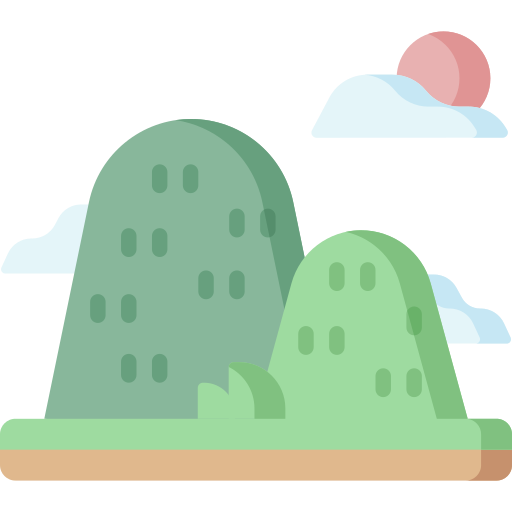
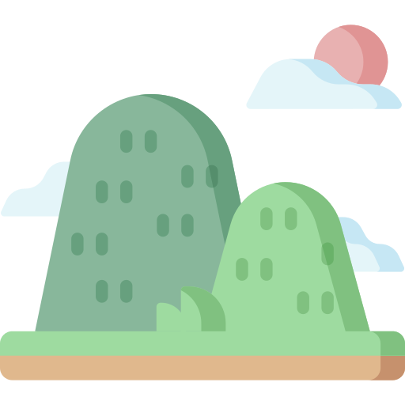

I'm Iuliana.
a programmer.


I'm a third year student at the Faculty of Control & Computer Engineering, a volunteer and I love constantly challenging myself and learning new things.

Along the way of my journey I got familiar with the next programming languages
Java, C++, HTML, Css, Verilog

My volunteering activities played a crucial role in improving and developing new soft-skills such as critical thinking, adaptability, communication, teamwork, Leadership, conflict resolution and emotional intelligence.